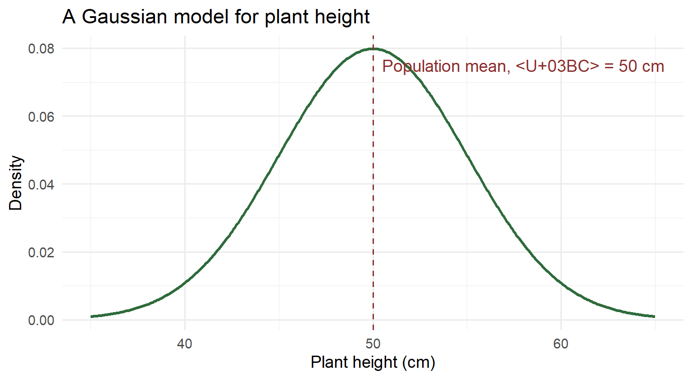
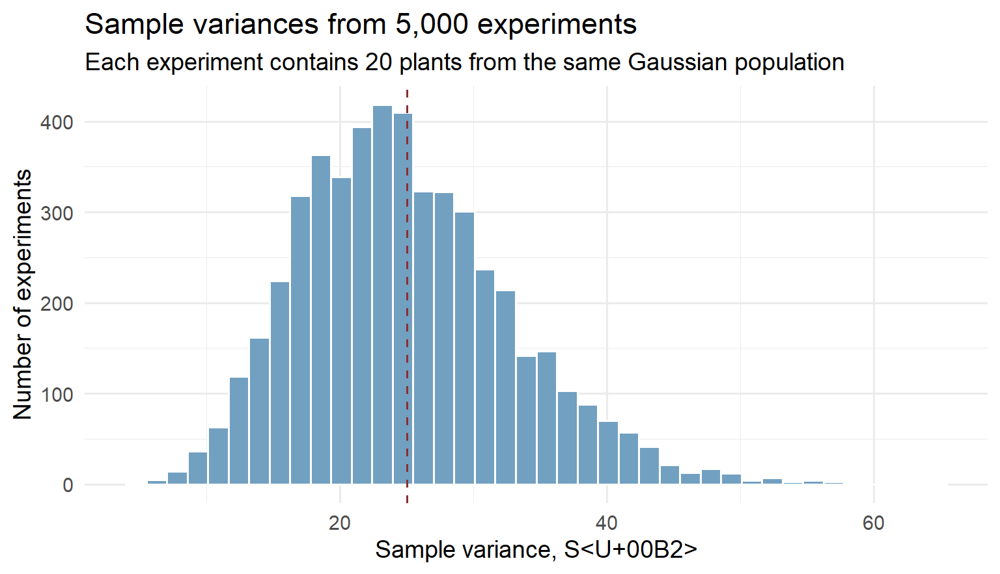
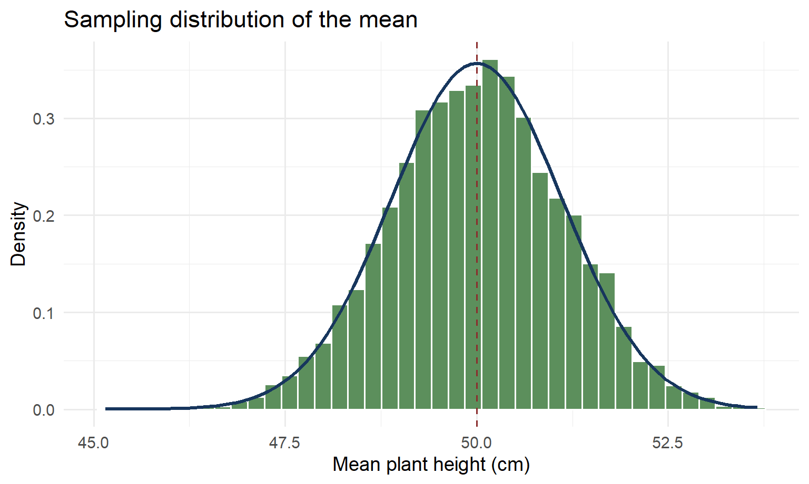
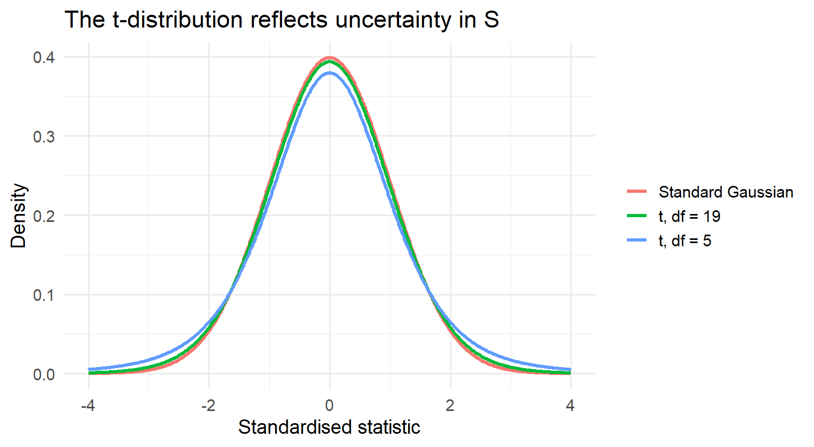
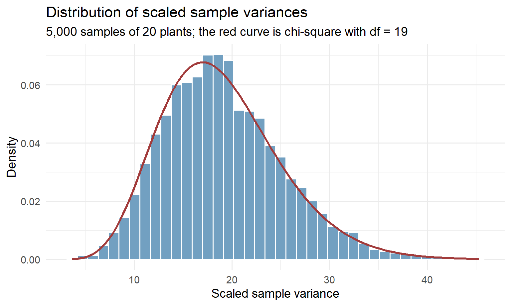
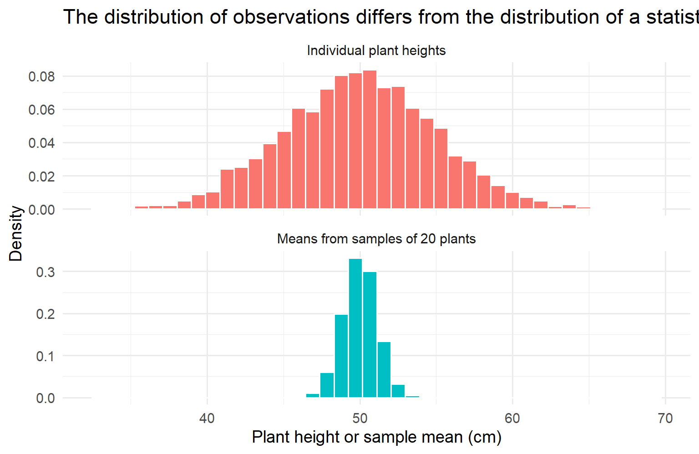
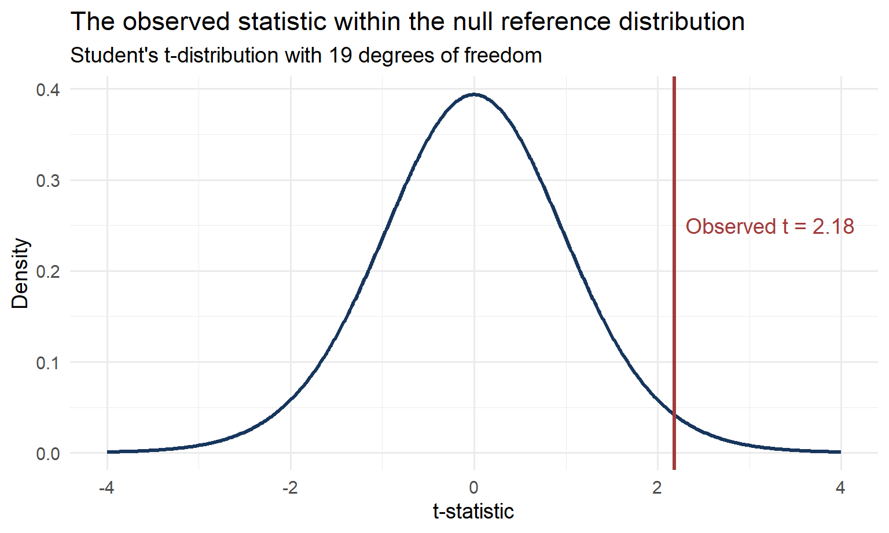
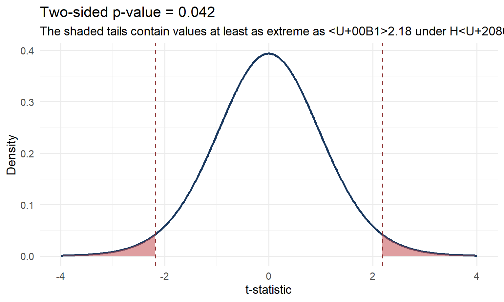
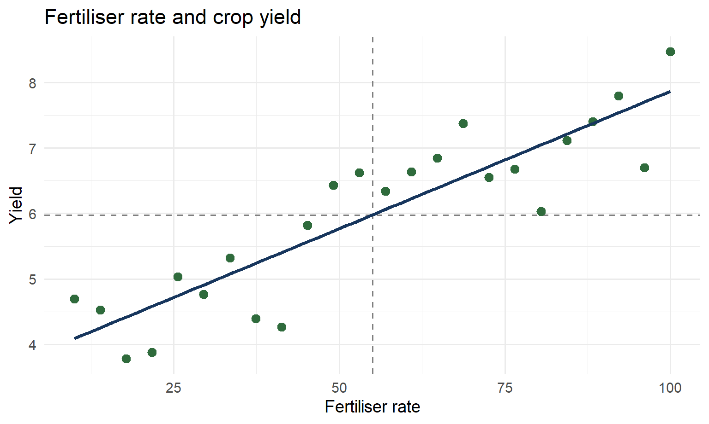

Why hypothesis tests work
Statistical inference starts with a simple question:
How far is an observed value from the value that we expected?
Suppose five plants have heights of 18, 20, 21, 23, and 28 cm. Their mean height is 22 cm.
| Plant | Height, \(x_i\) | Deviation, \(x_i-\bar{x}\) |
|---|---|---|
| 1 | 18 | \(-4\) |
| 2 | 20 | \(-2\) |
| 3 | 21 | \(-1\) |
| 4 | 23 | \(1\) |
| 5 | 28 | \(6\) |
A deviation records the distance and direction from a reference value. Here, the reference value is the sample mean, \(\bar{x}=22\) cm.
Positive and negative deviations cancel when we add them. We therefore need a method that measures their size without cancellation.
Variance measures the average squared distance from the sample mean:
\[ s^2=\frac{\sum_{i=1}^{n}(x_i-\bar{x})^2}{n-1} \]
Squaring gives every deviation a positive contribution. Large deviations make a greater contribution than small deviations.
For the five plant heights:
\[ s^2=\frac{(-4)^2+(-2)^2+(-1)^2+1^2+6^2}{4}=14.5\text{ cm}^2 \]
Variance and deviation describe related ideas, but they have different meanings. A deviation belongs to one observation. Variance summarises the squared deviations for the full sample.
The central idea for this lecture is broader than variance:
We measure a departure from an expected value relative to the variation that we would ordinarily expect.
Suppose plant height under fixed growing conditions can be described by a Gaussian population. The model has mean \(\mu\) and standard deviation \(\sigma\):
\[ X\sim N(\mu,\sigma^2) \]

The Gaussian model is an assumption for this example. Many populations have other shapes, and statistical methods use other sampling models when appropriate.
One experiment gives us one sample from the population. An equivalent experiment would usually give us a different sample.
Suppose we randomly select eight plants from the population.
| Sample observations, in cm | Sample mean | Sample variance |
|---|---|---|
| 43.8, 46.7, 48.9, 49.5, 51.1, 52.6, 54.2, 57.0 | 50.48 cm | 17.66 cm\(^2\) |
The sample mean, variance, correlation, and test statistic are all statistics. A statistic is a number calculated from a sample.
Our sample statistics estimate unknown population quantities. They contain sampling variation because a different random sample contains different observations.
We need to understand this sampling variation before we can decide whether a result is unusual.
Consider three samples of four observations from the same population.
| Repeated sample | Observations | Sample mean |
|---|---|---|
| Sample 1 | 48, 50, 52, 54 | 51 |
| Sample 2 | 49, 51, 53, 55 | 52 |
| Sample 3 | 47, 49, 50, 54 | 50 |
Every sample comes from the same population, but the means differ. Random selection creates this variation.
If we repeat the experiment many times, we obtain many sample means. Their distribution is the sampling distribution of the mean.
The sampling distribution describes the behaviour of a statistic across repeated samples. It does not describe the individual plant heights in one sample.
The sample variance also changes from sample to sample.

Some samples contain similar plant heights and have a small variance. Other samples contain more dispersed heights and have a large variance.
The distribution of these sample variances is another sampling distribution.
This figure represents a hypothetical repeated-sampling process. We draw 5,000 separate samples of 20 plants and calculate one mean from each sample.
The figure shows the 5,000 means. Together, these means form the sampling distribution of the mean.

The horizontal axis contains sample means from repeated samples. It does not contain individual plant heights from one sample.
For independent observations from a Gaussian population, the repeated sample means have this distribution:
\[ \bar{X}\sim N\left(\mu,\frac{\sigma^2}{n}\right) \]
The spread of this hypothetical sampling distribution is:
\[ SD(\bar{X})=SE(\bar{X})=\frac{\sigma}{\sqrt{n}} \]
In a real study, we observe one sample. When \(\sigma\) is unknown, that sample gives us an estimate of the standard error:
\[ \widehat{SE}(\bar{X})=\frac{S}{\sqrt{n}} \]
The estimated standard error belongs to our reported sample mean, but its meaning comes from hypothetical repeated samples of the same size.
Suppose the null hypothesis states that the population mean is \(\mu_0\). We compare our sample mean with this expected value.
The reference distribution depends on the standard deviation used in the denominator:
| Standard deviation used | Standardised statistic | Distribution under \(H_0\) |
|---|---|---|
| Known population value, \(\sigma\) | \(Z=(\bar{X}-\mu_0)/(\sigma/\sqrt{n})\) | \(Z\sim N(0,1)\) |
| Estimated sample value, \(S\) | \(T=(\bar{X}-\mu_0)/(S/\sqrt{n})\) | \(T\sim t_{n-1}\) |
The Gaussian result applies when we use the population standard deviation \(\sigma\). This value remains fixed across repeated samples.
Most studies do not know \(\sigma\). They estimate it with \(S\), which changes from sample to sample. The resulting statistic follows Student’s t-distribution.
A value of \(Z=2\) means that the sample mean lies two population standard errors above \(\mu_0\). A value of \(T=2\) means that it lies two estimated standard errors above \(\mu_0\). We use the corresponding reference distribution to decide how unusual that value is.
The next slide explains why estimating \(\sigma\) with \(S\) produces Student’s t-distribution and gives it heavier tails.
Replacing the fixed population value \(\sigma\) with the sample estimate \(S\) changes the reference distribution. The t-statistic uses the estimated standard error:
\[ T=\frac{\bar{X}-\mu_0}{S/\sqrt{n}} \]
Both \(\bar{X}\) and \(S\) vary across samples. This extra uncertainty gives the t-distribution heavier tails than the standard Gaussian distribution.

The same structure supports several tests:
| Research design | Test statistic |
|---|---|
| One sample | \(t=(\bar{x}-\mu_0)/(s/\sqrt{n})\) |
| Paired observations | \(t=\bar{d}/(s_d/\sqrt{n})\) |
| Two independent samples | \(t=(\bar{x}_1-\bar{x}_2)/\sqrt{s_1^2/n_1+s_2^2/n_2}\) |
Each test divides an observed mean difference by its estimated standard error.
We repeatedly take samples of 20 plants from the same Gaussian population. Each sample gives us a different variance, \(S^2\).

We scale every sample variance in the same way:
\[ \frac{(n-1)S^2}{\sigma^2}\sim\chi^2_{n-1} \]
The histogram shows the scaled values from the 5,000 samples. The red chi-square curve closely matches them.
The chi-square distribution applies to the scaled variance. The raw variance \(S^2\) remains in the original squared measurement units.
We should now ask an important question:
Why does variation in sample variances follow a chi-square distribution, and why does the familiar chi-square test use the same distribution?
The connection comes from squared deviations measured relative to an expected amount of variation.
| Sample variance | Pearson’s chi-square statistic |
|---|---|
| Compare each observation with the sample mean | Compare each observed count with its expected count |
| Square each deviation | Square each deviation |
| Scale using the population variance | Scale using the expected count |
| Add the scaled squared deviations | Add the scaled squared deviations |
The two calculations use the same broad logic, but they measure different departures. Sample variance measures dispersion around a mean. Pearson’s statistic measures count differences from expected frequencies.
Suppose 95 students report their main mode of travel.
| Car | Bus | Foot | Row total | |
|---|---|---|---|---|
| Male | 17 | 18 | 21 | 56 |
| Female | 24 | 8 | 7 | 39 |
| Column total | 41 | 26 | 28 | 95 |
Under independence, each expected count is:
\[ E_{ij}=\frac{(\text{row }i\text{ total})(\text{column }j\text{ total})}{N} \]
Pearson’s statistic measures the total scaled departure from these expected counts:
\[ \chi^2=\sum_{i,j}\frac{(O_{ij}-E_{ij})^2}{E_{ij}} \]
A goodness-of-fit test compares one categorical variable with stated proportions. A test of association compares two categorical variables. Both use the same squared-deviation structure.
The chi-square reference distribution for counts is a large-sample approximation under the null sampling model. The original observations do not need to follow a Gaussian distribution.
The null hypothesis, \(H_0\), states the expected condition that we use for comparison. It often represents no difference or no association.
For a one-sample t-test:
\[ H_0:\mu=\mu_0 \]
For a chi-square test of association:
\[ H_0:\text{the two categorical variables are independent} \]
For Pearson correlation:
\[ H_0:\rho=0 \]
We use repeated sampling under \(H_0\) to establish the values that our statistic would ordinarily take. This process gives us the null reference distribution.
Individual observations and sample statistics answer different questions.

The top panel shows individual measurements. The lower panel shows means from repeated samples. Student’s t and chi-square distributions also describe statistics across repeated samples, rather than the original measurements.
Suppose a sample of 20 plants gives \(t=2.18\) when we test \(H_0:\mu=50\) cm.

The centre of the distribution contains values that often occur when \(H_0\) is true. The tails contain values that occur less often.
The observed statistic lies in the reference distribution. Its position tells us how compatible the data are with the null model.
For a two-sided test, the p-value includes results at least as far from zero as the observed statistic in either direction.

Formally:
\[ p=P\left(|T|\ge |t_{\text{observed}}|\mid H_0\right) \]
The p-value answers a conditional question. It assumes that the null model is true and measures how unusual the observed statistic would then be.
We choose a significance level, such as \(\alpha=0.05\), before we examine the result.
A p-value does not give the probability that \(H_0\) is true. It does not measure the size or practical importance of an effect.
We should report the observed effect with the p-value. For a mean comparison, report the mean difference and a confidence interval. For correlation, report \(r\). For a contingency table, describe the pattern of observed counts.
The decision rule supports consistent analysis. The research conclusion must also consider the design, assumptions, sample size, and subject context.
Variance describes how one variable differs from its mean. Covariance describes how deviations in two variables move together.
For each plot, compare fertiliser rate with yield:
\[ \operatorname{Cov}(X,Y)=\frac{\sum_{i=1}^{n}(x_i-\bar{x})(y_i-\bar{y})}{n-1} \]

When both deviations usually have the same sign, covariance is positive. When they usually have opposite signs, covariance is negative.
Covariance depends on the measurement units. Pearson correlation divides covariance by the two standard deviations:
\[ r=\frac{\operatorname{Cov}(X,Y)}{s_Xs_Y} \]
The result lies between \(-1\) and \(1\).
For the fertiliser example:
\[ r=0.89 \]
Correlation measures linear association. A strong correlation does not establish causation, and unusual observations can strongly affect \(r\).
The null hypothesis states that the population has no linear correlation:
\[ H_0:\rho=0 \]
Under the standard assumptions for Pearson correlation, we transform the sample correlation into a t-statistic:
\[ t=r\sqrt{\frac{n-2}{1-r^2}},\qquad df=n-2 \]
This transformation returns us to Student’s t reference distribution. The test asks whether the observed \(r\) is unusually far from zero compared with random correlations under \(H_0\).
For the 24 plots in our example:
\[ t=9.08,\qquad df=22,\qquad p=6.72e-09 \]
The logic remains the same. We compare a deviation from an expected value with the variation expected under the null model.
Every result should identify the statistic, degrees of freedom, p-value, sample size, and substantive interpretation.
| Analysis | Example report |
|---|---|
| One-sample t-test | The mean plant height differed from 50 cm, \(t(19)=2.18\), \(p=0.042\), \(n=20\). |
| Pearson correlation | Fertiliser rate had a positive linear relationship with yield, \(r(22)=0.89\), \(p<0.001\), \(n=24\). |
| Chi-square association | Travel mode was associated with gender, \(\chi^2(2)=9.30\), \(p=0.010\), \(N=95\). |
Use plain language after the statistical statement. Explain what the evidence means for the research question.
The full reasoning follows one sequence:
Statistical inference asks whether an observed departure is large relative to the variation that ordinary sampling can produce.
Once your data are tidy and your variables are correctly coded, each test needs one short function call.
Independent groups t-test
Paired t-test
Chi-square test of association
Pearson correlation test
R performs the calculation and returns the test statistic, p-value, and other relevant output. Your task is to choose the correct test, check its assumptions, and interpret the result in relation to the research question.